Programación de Artefactos
Laboratorio 5 - ESP32 y conexion a Internet en Adafruit
Introducción a Adafruit
[Explica brevemente el tema]
[Añade aquí el contexto necesario]
Sensor ultrasónico HC-SR04
[Explica brevemente el sensor ultrasónico HC-SR04]
Configuración de Adafruit
Paso 1:
En el Arduino IDE, ve al menú Sketch -> Include Library, selecciona Manage Libraries. Tambien puedes utilizar el icono de libro en la barra lateral izquierda.
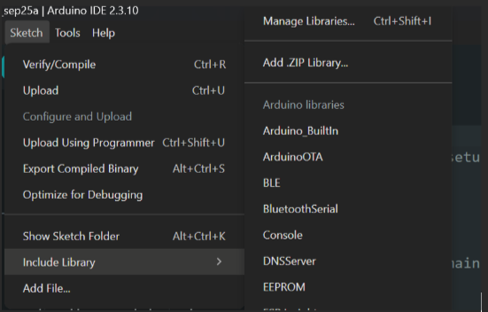
Paso 2:
En el buscador del Library Manager escribe “Adafruit IO Arduino” y localiza la librería oficial publicada por Adafruit. Haz clic en Install, y acepta instalar todas las dependencias.
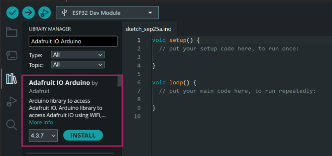
Paso 3:
Ahora verificamos que las librerías quedaron instaladas. Vuelve a abrir el Library Manager, escribe "Adafruit" en el buscador y cambia el filtro Type a Installed. Debe aparecer Adafruit IO Arduino junto con sus dependencias, todas marcadas como "installed".
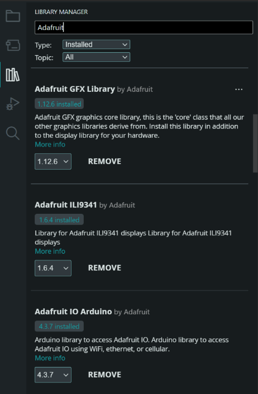
Paso 4:
Ahora debemos obtener el Usuario y la AIO Key de nuestra sesion de adafruit.com. En la esquina superior derecha, haz clic en el icono amarillo con forma de llave
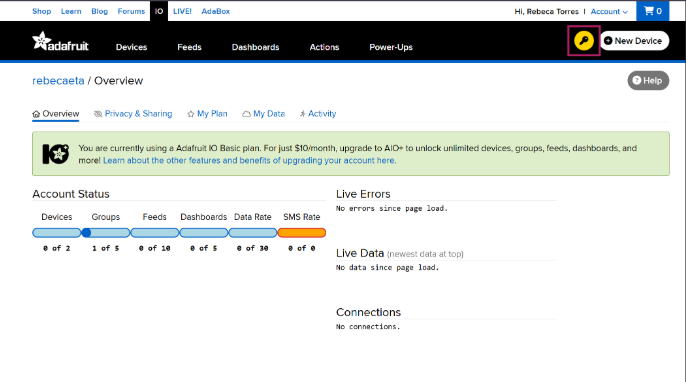
Se abrirá una ventana con tu Username y Active Key (AIO Key). Estas dos credenciales son las que se usaran en el codigo para conectar el ESP32 a Adafruit IO.
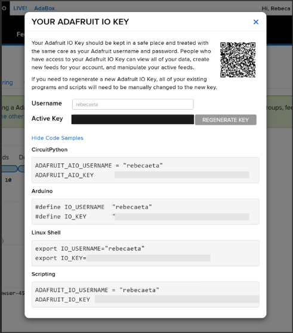
Primera Prueba
Paso 1: [Nombre del paso]
[Describe lo que debe hacer la persona que realiza el laboratorio.]
[Añade aquí una imagen propia en la carpeta imagenes, si es necesaria.]
// Escribe o pega aquí el código de la práctica
// TODO: completar
Actividad práctica: Ultrasónico + LED RGB + Adafruit IO
En esta actividad se conecta el sensor ultrasónico HC-SR04 a Adafruit IO para publicar la distancia medida en tiempo real, visible en un dashboard mediante un widget y un LED RGB que su color cambia según qué tan cerca esté un objeto del sensor.
Creación de Feeds y Widgets en el Dashboard
Paso 1:
Para crear un Feed debes ir a el menú superior de Adafruit IO, hacer clic en Feeds y luego en el botón New Feed.
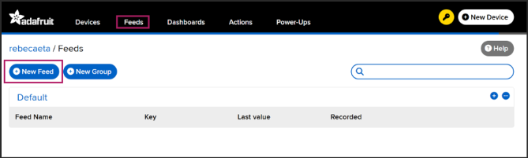
Se abrirá un formulario donde debes escribir el nombre del feed (por ejemplo "distancia") y, opcionalmente, una descripción. Luego haz clic en Create.
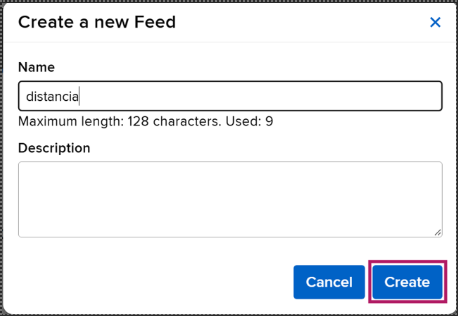
El nuevo feed aparecerá listado bajo el grupo "Default", junto con su Feed Key (el nombre que se usará en el código para identificarlo).
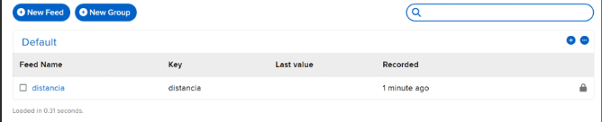
Paso 2
Para crear un nuevo Dahboard, haz clic en Dashboards y luego en New Dashboard.
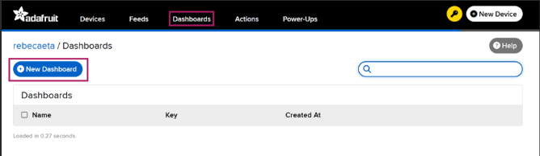
Escribe un nombre para el dashboard (por ejemplo "Sensor Ultrasónico") y, opcionalmente, una descripción. Haz clic en Create.
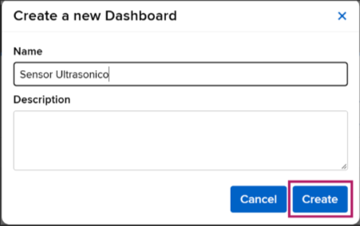
El dashboard quedará creado y listado, listo para agregarle widgets.
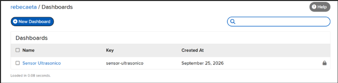
Paso 3:
Dentro del dashboard, haz clic en el botón New Block, ubicado en la esquina superior derecha.
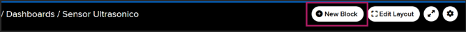
Se abrirá una ventana con todos los tipos de bloques disponibles. Para mostrar la distancia del sensor ultrasónico, elige el bloque Gauge (medidor circular). Para el desafío del toggle que apaga el LED, elige el bloque Toggle (el primero de la lista, con el interruptor ON/OFF).
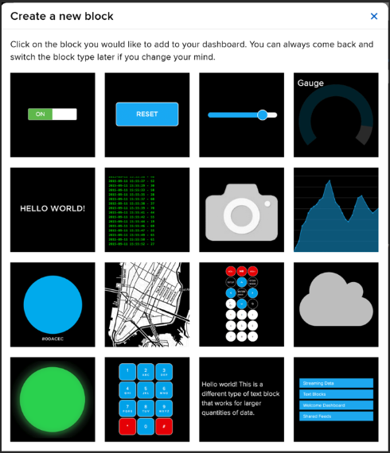
En la siguiente pantalla, te pedirá elegir a qué feed se conectará el bloque.
Marca el checkbox del feed correspondiente (por ejemplo "distancia" para el Gauge) y haz clic en Next step.
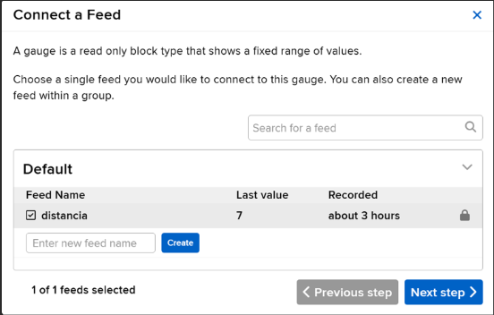
Configura los datos del bloque, como título, rango, etiqueta de unidades, luego haz clic en Create Block.
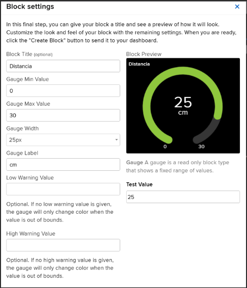
Así se ve el widget ya funcionando en el dashboard, mostrando en vivo el valor que envía el sensor:
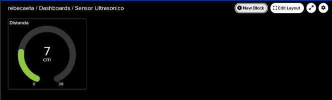
Conexiones
| Componente | ESP32 |
|---|---|
| Ultrasonico VCC | 5V |
| Ultrasonico GND | GND |
| Ultrasonico Trig | GIOP18 |
| Ultrasonico Echo | GIOP19 |
| RGB Red | Resistencia 330Ω -> GIOP25 |
| RGB Catodo | GND |
| RGB Green | Resistencia 330Ω -> GIOP26 |
| RGB Blue | Resistencia 330Ω -> GIOP27 |
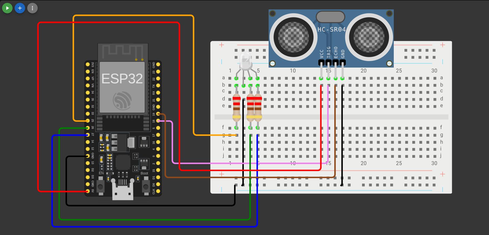
Sustituye los valores de la plantilla con tus propios valores.
Plantilla de código para el ESP32:
#include
#include "Adafruit_MQTT.h"
#include "Adafruit_MQTT_Client.h"
// ---------------------- CONFIGURACIÓN WI-FI ----------------------
#define WLAN_SSID "ARTEFACTOS"
#define WLAN_PASS "ARTEFACTOS"
// ---------------------- CONFIGURACIÓN ADAFRUIT IO ----------------------
#define AIO_SERVER "io.adafruit.com"
#define AIO_SERVERPORT 1883
#define AIO_USERNAME "TU_USUARIO_ADAFRUIT" // <- cambiar
#define AIO_KEY "TU_AIO_KEY" // <- cambiar (no la subas a repositorio)
// ---------------------- PINES ----------------------
#define TRIG_PIN 18
#define ECHO_PIN 19
#define PIN_R 25
#define PIN_G 26
#define PIN_B 27
// ---------------------- AJUSTES ----------------------
#define RGB_ANODO_COMUN false
#define PWM_FREQ 5000
#define PWM_RES 8
#define INTERVALO_PUBLICAR_MS 5000 // Adafruit gratis limita los datos por minuto: no bajar de 4-5 s
#define DIST_CERCA_CM //Agregar distancia
#define DIST_MEDIA_CM //Agregar distancia
// ---------------------- CLIENTE MQTT Y FEED ----------------------
WiFiClient client;
Adafruit_MQTT_Client mqtt(&client, AIO_SERVER, AIO_SERVERPORT, AIO_USERNAME, AIO_KEY);
// Publicar
Adafruit_MQTT_Publish feedDistancia = Adafruit_MQTT_Publish(&mqtt, AIO_USERNAME "/feeds/distancia");
// ---------------------- ESTADO ----------------------
float ultimaDistancia = -1; // última lectura válida (cm)
unsigned long ultimoPublicar = 0;
unsigned long ultimoPing = 0;
// ---------------------- FUNCIONES ----------------------
void conectarWiFi();
void conectarMQTT();
float leerDistanciaCm();
float distanciaPromedio(int muestras);
void escribirRGB(uint8_t r, uint8_t g, uint8_t b);
void actualizarLED();
// =====================================================================
void setup() {
Serial.begin(115200);
delay(10);
pinMode(TRIG_PIN, OUTPUT);
pinMode(ECHO_PIN, INPUT);
ledcAttach(PIN_R, PWM_FREQ, PWM_RES);
ledcAttach(PIN_G, PWM_FREQ, PWM_RES);
ledcAttach(PIN_B, PWM_FREQ, PWM_RES);
escribirRGB(255, 255, 255);
conectarWiFi();
}
// =====================================================================
void loop() {
conectarMQTT(); // mantiene la conexión con Adafruit (reconecta si se cae)
// Leer el ultrasónico y publicar cada cierto tiempo
if (millis() - ultimoPublicar >= INTERVALO_PUBLICAR_MS) {
ultimoPublicar = millis();
float d = distanciaPromedio(5);
if (d > 0) {
ultimaDistancia = d;
Serial.print("Distancia: "); Serial.print(d, 1); Serial.println(" cm");
if (!feedDistancia.publish(d)) {
Serial.println("Error al publicar la distancia");
}
} else {
Serial.println("Lectura fuera de rango o sin eco");
}
actualizarLED(); // el color depende de la última distancia leída
}
// Mantener viva la conexión MQTT
if (millis() - ultimoPing >= 30000) {
ultimoPing = millis();
mqtt.ping();
}
}
// =====================================================================
// ULTRASÓNICO HC-SR04
// =====================================================================
float leerDistanciaCm() {
// Pulso de 10 us en TRIG
digitalWrite(TRIG_PIN, LOW);
delayMicroseconds(2);
digitalWrite(TRIG_PIN, HIGH);
delayMicroseconds(10);
digitalWrite(TRIG_PIN, LOW);
// Tiempo que ECHO permanece en alto
long duracion = pulseIn(ECHO_PIN, HIGH, 30000);
if (duracion == 0) return -1; // no hubo eco
float distancia = 0; // <- reemplazar esta línea con formula
// Rango útil del sensor: 2 a 100 cm
if (distancia < 2 || distancia > 100) return -1;
return distancia;
}
// Promedia varias lecturas para reducir el ruido
float distanciaPromedio(int muestras) {
float suma = 0;
int validas = 0;
for (int i = 0; i < muestras; i++) {
float d = leerDistanciaCm();
if (d > 0) { suma += d; validas++; }
delay(40); // espera entre mediciones para que no se mezclen los ecos
}
return (validas > 0) ? suma / validas : -1;
}
// =====================================================================
// LED RGB
// =====================================================================
void escribirRGB(uint8_t r, uint8_t g, uint8_t b) {
if (RGB_ANODO_COMUN) {
r = 255 - r; g = 255 - g; b = 255 - b;
}
ledcWrite(PIN_R, r);
ledcWrite(PIN_G, g);
ledcWrite(PIN_B, b);
}
// El color debe cambiar solo según la última distancia leída.
void actualizarLED() {
if (ultimaDistancia <= 0) {
escribirRGB(255, 255, 255); // aún no hay lectura válida -> blanco
return;
}
// Usando las variables declaradas anteriormente que color mostrar:
// - Si ultimaDistancia es menor a DIST_CERCA_CM -> rojo
// - Si ultimaDistancia es menor a DIST_MEDIA_CM -> amarillo
// - Si ultimaDistancia es mayor o igual a DIST_MEDIA_CM -> verde
}
// =====================================================================
// CONEXIONES
// =====================================================================
void conectarWiFi() {
Serial.print("Conectando a "); Serial.println(WLAN_SSID);
WiFi.begin(WLAN_SSID, WLAN_PASS);
while (WiFi.status() != WL_CONNECTED) {
delay(500);
Serial.print(".");
}
Serial.println();
Serial.print("WiFi conectado. IP: "); Serial.println(WiFi.localIP());
}
void conectarMQTT() {
if (mqtt.connected()) return;
Serial.print("Conectando a Adafruit IO... ");
int8_t ret;
uint8_t intentos = 3;
while ((ret = mqtt.connect()) != 0) {
Serial.println(mqtt.connectErrorString(ret));
Serial.println("Reintentando en 5 segundos...");
mqtt.disconnect();
delay(5000);
if (--intentos == 0) {
Serial.println("No se pudo conectar. Reiniciando la ESP32...");
ESP.restart();
}
}
Serial.println("¡Conectado a Adafruit IO!");
}
Desafío: apagar el LED desde Adafruit con un Toggle
Se debera agregar un botón tipo Toggle en el dashboard que permita encender o apagar el LED RGB desde Adafruit IO.
Para esto es necesario crear un nuevo feed. A diferencia del feed
distancia, este feed no lo publica el ESP32, sino que el ESP32 se suscribe
a él para recibir los cambios que la persona haga desde el dashboard.
- Declarar una nueva suscripción con
Adafruit_MQTT_Subscribeapuntando al nuevo feed. - Suscribirse a ese feed dentro de
setup()conmqtt.subscribe(...). - Dentro de
loop(), revisar conmqtt.readSubscription()si llegó un mensaje nuevo de ese feed.
Entregables
Al finalizar el laboratorio, deberá entregar las siguientes evidencias:
- Captura de pantalla de la prueba de la conexion del ESP32 a Adafruit IO. La captura deberá mostrar el código ejecutándose y el feed de prueba en Adafruit IO.
-
Enlace al repositorio de GitHub.
El repositorio deberá contener los dos programas desarrollados durante la actividad:
- Código de prueba del sensor Ultrasonico.
- Código de integración del sensor Ultrasonico con Adafruit IO y el LED RGB.
- Foto del circuito armado.